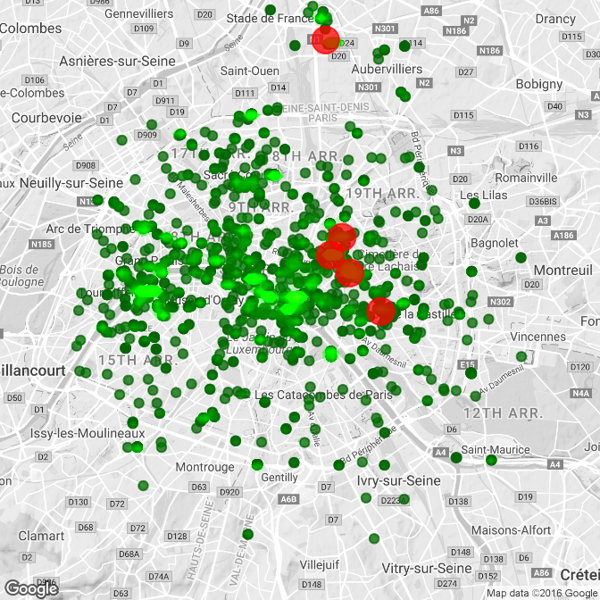

Chapter 12 Reporting results #3
Download a pdf of the lecture slides covering this topic.
12.1 Resources for learning Shiny
There is an excellent tutorial to get you started here at RStudio. There are also several great sites that show you both Shiny examples and their code, here and here.
Many of the examples and ideas in the course notes this week come directly or are adapted from RStudio’s Shiny tutorial.
To start, Shiny has several example apps that you can try out. These are all available through your R session once you install the Shiny package. You can make them available to your R session using the command system.file():
install.packages("shiny")
library(shiny)
system.file("examples", package = "shiny")12.2 Basics of Shiny apps
Once you have Shiny installed, you can run the examples using the runExample() command. For example, to run the first example, you would run:
runExample("01_hello")This is a histogram that lets you adjust the number of bins using a slider bar. Other examples are: 02_text, 03_reactivity, 04_mpg, 05_sliders, 06_tabsets, 07_widgets, 08_html, 09_upload, 10_download, and 11_timer.
When you run any of these, a window will come up in your R session that shows the Shiny App, and your R session will pay attention to commands it gets from that application until you close the window. Notice that if you scroll down, you’ll be able to see the code that’s running behind the application:

Generally, each application takes two files: (1) a user interface file and (2) a server file. You can kind of think of the two elements of an R shiny app, the user interface and the server, as two parts of a restaurant.

The user interface is the dining area. This is the only place the customer every sees. It’s where the customer makes his order, and it’s also where the final product comes out for him to consume. The server is the kitchen. It takes the order, does all the stuff to make it happen, and then sends out the final product back to the dining area.
At its heart, an R shiny app is just a directory on your computer or a server with these two files (as well as any necessary data files) in it. For example, here’s a visual of an App I wrote to go with a paper:

This has the heart of the application (server.R and ui.R) plus a couple of R helper files and subdirectories with some figures and data that I’m using in the that application. If I open either of the main files in RStudio, I can run the application locally using a button at the top of the file called “Run App”. Once I have the App running, if I have an account for the Shiny server, I can choose to “Publish” the application to the Shiny server, and then anyone can access and use it online (this service is free up to a certain number of visitors per time– unless you make something that is very popular, you should be well within the free limit).
12.3 server.R file
The server file will be named server.R. This file tells R what code to run with the inputs it gets from a user making certain selections. For example, for the histogram example, this file tells R how to re-draw a histogram of the data with the number of bins that the user specified on the slider on the application. Once you get through all the code for what to do, this file also will have code telling R what to send back to the application for the user to see (in this case, a picture of a histogram made with the specified number of bars). Here is the code in the server.R file for the histogram example:
library(shiny)
# Define server logic required to draw a histogram
shinyServer(function(input, output) {
# Expression that generates a histogram. The expression is
# wrapped in a call to renderPlot to indicate that:
#
# 1) It is "reactive" and therefore should be automatically
# re-executed when inputs change
# 2) Its output type is a plot
output$distPlot <- renderPlot({
x <- faithful[, 2] # Old Faithful Geyser data
bins <- seq(min(x), max(x), length.out = input$bins + 1)
# draw the histogram with the specified number of bins
hist(x, breaks = bins, col = 'darkgray', border = 'white')
})
})Notice that some of the “interior” code here looks very familiar and should remind you of code we’ve been learning about this class. For example, this file has within it some code to figure out the breaks for histogram bins, based on how many total bins you want, and draw a histogram with those bin breaks:
x <- faithful[, 2] # Old Faithful Geyser data
bins <- seq(min(x), max(x), length.out = input$bins + 1)
# draw the histogram with the specified number of bins
hist(x, breaks = bins, col = 'darkgray', border = 'white')This code is then “wrapped” in two other functions. First, this code is generating a plot that will be posted to the application, so it’s wrapped in a renderPlot function to send that plot as output back to the application:
output$distPlot <- renderPlot({
x <- faithful[, 2] # Old Faithful Geyser data
bins <- seq(min(x), max(x), length.out = input$bins + 1)
# draw the histogram with the specified number of bins
hist(x, breaks = bins, col = 'darkgray', border = 'white')
})Notice that this code is putting the results of renderPlot into a slot of the object output named distPlot. We could have used any name we wanted to here, not just distPlot, for the name of the slot where we’re putting this plot, but it is important to put everything into an object called output. Now that we’ve rendered the plot and put it in that slot of the output object, we’ll be able to refer to it by its name in the user interface file, when we want to draw it somewhere there.
All of this is wrapped up in another wrapper:
# Define server logic required to draw a histogram
shinyServer(function(input, output) {
# Expression that generates a histogram. The expression is
# wrapped in a call to renderPlot to indicate that:
#
# 1) It is "reactive" and therefore should be automatically
# re-executed when inputs change
# 2) Its output type is a plot
output$distPlot <- renderPlot({
x <- faithful[, 2] # Old Faithful Geyser data
bins <- seq(min(x), max(x), length.out = input$bins + 1)
# draw the histogram with the specified number of bins
hist(x, breaks = bins, col = 'darkgray', border = 'white')
})
})The server.R file also has a line to load the shiny package. You should think of apps as being like Rmd files– if there are any packages or datasets that you need to use in the code in that file, you need to load it within the file, because R won’t check in your current R session to find it when it runs the file.
12.4 ui.R file
The other file that a Shiny app needs is the user interface file (ui.R). This is the file that describes how the application should look. It will write all the buttons and sliders and all that you want for the application interface. This is also where you specify what you want to go where and put in any text that you want to show up.
For example, here is the ui.R file for the histogram example:
library(shiny)
# Define UI for application that draws a histogram
shinyUI(fluidPage(
# Application title
titlePanel("Hello Shiny!"),
# Sidebar with a slider input for the number of bins
sidebarLayout(
sidebarPanel(
sliderInput("bins",
"Number of bins:",
min = 1,
max = 50,
value = 30)
),
# Show a plot of the generated distribution
mainPanel(
plotOutput("distPlot")
)
)
))There are a few things to notice with this code. First, there is some code that tells the application to show the results from the server.R code. For example, the following code tells R to show the histogram that we put into the output object in the distPlot slot and to put that graph in the main panel of the application:
mainPanel(
plotOutput("distPlot")
)Other parts of the ui.R code will tell the application what kinds of choice boxes and sliders to have on the application, and what default value to set each to. For example, the following code tells the application that it should have a slider bar that can take a minimum value of 1 and a maximum value of 50. When you first open the application, its default value should be 30. It should be annotated with the text “Number of bins:”. Whatever value is selected should be saved to the bins slot of the input object (just like we’re using the output object to get things out of the server and printed to the application, we’re using the input object to get things that the user chooses from the application interface to the server where we can run R code).
sliderInput("bins",
"Number of bins:",
min = 1,
max = 50,
value = 30)12.5 Making a Shiny app
The first step in making a Shiny app is to make a new directory somewhere and to create R scripts for that directory called server.R and ui.R. You can just make these two files the normal way– within RStudio, do “New File”, “R Script”, and then just save them with the correct names to the directory you created for the App. Once you save a file as ui.R, notice that you’ll have a button in the top right of the file called “Run App”. When you’re ready to run your application, you can either use this button or use the command runApp.
12.5.1 Starting with the ui.R file
Next, you’ll need to put code in these files. I would suggest starting with the ui.R files. This file is where you get to set up how the application looks and how people will be able to interact with it. That means that this is a good place to start because it’s both quickly fulfilling (I made something pretty!) and also because you need to have an idea of what inputs and outputs you need before you can effectively make the server file to tell R what to do. In truth, though, you’ll be going back and forth quite a bit between these two files as you edit your application.
In the ui.R file, everything needs to be wrapped in a shinyUI() function, and then most things will be wrapped in other functions within that to set up different panels. For example, here’s a very basic ui.R file (adapted directly from the RStudio tutorial) that shows a very basic set up for a user interface:
shinyUI(fluidPage(
titlePanel("Tweets during Paris Attack"),
sidebarLayout(
sidebarPanel("Select hashtag to display"),
mainPanel("Map of tweets")
)
))Notice that everything that I want to go in certain panels of the page are wrapped in functions like sidebarPanel and mainPanel and titlePanel. Everything in this file will be divided up by the place you want it to go in the final version.
As a note, the sidebar layout (a sidebar on one side and one main panel) is the simplest possible Shiny layout. You can do fancier layouts if you want by using different functions like fluidRow() and navBarPage(). RStudio has a layout help page with very detailed instructions and examples to help you figure out how to do other layouts.
If I run this ui.R, even if my server.R file only includes the line shinyServer(function(input, output) { }), I’ll get the following version application:

This doesn’t have anything interactive on it, and it isn’t using R at all, but it shows the basics of how the syntax of the ui.R file works. As a note, I don’t have all of the functions for this, like fluidPage and titlePanel memorized. When I’m working on this file, I’ll either look to example code from other Shiny apps of look at RStudio’s help for Shiny applications until I can figure out what syntax to use to do what I want to do.
12.5.2 Adding in widgets
Next, I’ll add in some cool things that will let the user interact with the application. In this case, I’d like to have a slider bar so people can chose the range of time for the tweets that are shown. I’d also like to have a selection box so that users can look at maps of specific hashtags or terms. To add these on (they won’t be functional, yet, but they’ll be there!), I can edit the ui.R script to the following:
shinyUI(fluidPage(
titlePanel("Tweets during Paris Attack"),
sidebarLayout(position = "right",
sidebarPanel("Choose what to display",
sliderInput(inputId = "time_range",
label = "Select the time range: ",
value = c(as.POSIXct("2015-11-13 00:00:00",
tz = "CET"),
as.POSIXct("2015-11-14 12:00:00",
tz = "CET")),
min = as.POSIXct("2015-11-13 00:00:00", tz = "CET"),
max = as.POSIXct("2015-11-14 12:00:00", tz = "CET"),
step = 60,
timeFormat = "%dth %H:%M",
timezone = "+0100")),
mainPanel("Map of tweets")
)
))The important part of this is the new sliderInput call, which sets up a slider bar that users can use to specify certain time ranges to look at. Here is what the interface of the app looks like now:

If I open this application, I can move the slider bar around, but I it isn’t actually sending any information to R yet.
The heart of this new addition to the ui.R file is this:
sliderInput(inputId = "time_range",
label = "Select the time range: ",
value = c(as.POSIXct("2015-11-13 00:00:00", tz = "CET"),
as.POSIXct("2015-11-14 12:00:00", tz = "CET")),
min = as.POSIXct("2015-11-13 00:00:00", tz = "CET"),
max = as.POSIXct("2015-11-14 12:00:00", tz = "CET"),
step = 60,
timeFormat = "%dth %H:%M",
timezone = "+0100")This is all within the function sliderInput and is all being used to set up the slider bar. "time_range" is the name I’m giving the input I get from this. Later, when I write my server code, I’ll be able to pull the values that the user suggested from the time_range slot of the input object. The next thing is the label. This is what I want R to print right before it gives the slider bar. The value object says which values I want to be the defaults on the slider. This is where the slider positions will be when someone initially opens the application. min and max give the highest and lowest values that will show up on the slider bar. For this application, I’m calling them as POSIXct objects because I want to do this for times rather than numbers. step says how big of an increment I want the slider to advance by when someone is pulling it. If the values of the slider are times, then the default unit for this is seconds, so I’m saying to have a step size of one minute. The timeFormat says how I want the time to print out at the interface and the timezone says what time zone I want time values to display in.
Things like this slider bar are called “Control Widgets”, and there’s a whole list of them in the third lesson of RStudio’s Shiny tutorial. There are also examples online in the Shiny Gallery.
12.5.3 Creating output in server.R
Next, I’ll put some R code in the server.R file to create a figure and pass it through to the ui.R file to print out to the application interface. At first, I won’t make this figure “reactive”; that is, it won’t change at all when the user changes the slider bar. However, I will eventually add in that reactivity so that the plot changes everytime a user changes the slider bar.
I am going to create a map of all the Tweets that included certain hashtags or phrases and that were Tweeted (and geolocated) from within a five-mile radius of the center of Paris during the attacks last Friday. For this, I’m going to use data on Tweets I pulled using the TwitteR package, which syncs up with Twitter’s API. Here’s an example of what the data looks like (I’ve cleared out some of the extra columns I won’t use):
paris_twitter <- read.csv("data/App-1/data/final_tweets.csv", as.is = TRUE) %>%
mutate(tag = factor(tag),
created = ymd_hms(created, tz = "Europe/Paris"),
text = iconv(text, to='ASCII//TRANSLIT'))
paris_twitter[1:2, ]## text
## 1 RT @forza_will2006: My heart aches for the people of France. #PorteOuverte #PrayForParis #DownWithTerrorism #Pompidou... https://t.co/KwtNPsQ...
## 2 Ensemble contre la haine #jesuisparis #porteouverte #paris @ Place de la Republique https://t.co/TZykpVJHwd
## created longitude latitude tag
## 1 2015-11-15 01:27:56 NA NA #PorteOuverte
## 2 2015-11-14 22:19:47 2.364184 48.86747 #PorteOuverteAbout an equal number of these have and don’t have location data:
table(!is.na(paris_twitter$longitude))##
## FALSE TRUE
## 10478 10683Here is a table of the number of tweets under the five most-tweeted tags:
head(paris_twitter)## text
## 1 RT @forza_will2006: My heart aches for the people of France. #PorteOuverte #PrayForParis #DownWithTerrorism #Pompidou... https://t.co/KwtNPsQ...
## 2 Ensemble contre la haine #jesuisparis #porteouverte #paris @ Place de la Republique https://t.co/TZykpVJHwd
## 3 Liberte, egalite, fraternite #Paris #TodosSomosParis #JeSuisParis #PorteOuverte #peace #paix #paz... https://t.co/AjYVrmCCnL
## 4 Stay With My French #prayforparis #parisattacks #porteouverte #france #riphumanity #liberte #egalite... https://t.co/9DH5diHmyz
## 5 <NA>
## 6 RT @bodoi_music: J'ai peur je cherche un abri #porteouverte https://t.co/1DIr4VLOEa
## created longitude latitude tag
## 1 2015-11-15 01:27:56 NA NA #PorteOuverte
## 2 2015-11-14 22:19:47 2.364184 48.86747 #PorteOuverte
## 3 2015-11-14 21:36:06 2.350800 48.85670 #PorteOuverte
## 4 2015-11-14 21:00:49 2.350800 48.85670 #PorteOuverte
## 5 2015-11-14 20:11:01 2.350800 48.85670 #PorteOuverte
## 6 2015-11-14 19:52:43 NA NA #PorteOuvertetweet_sum <- paris_twitter %>%
dplyr::group_by_(~ tag) %>%
dplyr::summarize_(n = ~ n(),
example = ~ gsub("[[:punct:]]", " ",
base::sample(text, 1))) %>%
dplyr::arrange_(~ dplyr::desc(n))
knitr::kable(tweet_sum[1:5, ],
col.names = c("Tag", "# of Tweets", "Example Tweet"))| Tag | # of Tweets | Example Tweet |
|---|---|---|
| #Paris | 7502 | RT Vince66240 Tirs a la Kalash au petit Cambodge dans le 10 eme a Paris plusieurs morts Secours et police sur place tir https t co B |
| #PrayForParis | 7250 | NA |
| #13novembre | 1255 | RT taimaz Perimetre de securite de 100m autour du bataclan AFP Paris 13novembre https t co A6Rp31ZqXN |
| #PorteOuverte | 1147 | RT fake rebel Si jamais quelqu un a besoin porteouverte Metro Maraichers L appart est vide car on a signe le bail il y a 1h mais on e |
| #fusillade | 765 | RT jacques lefort Coups de feu et haute tension a l angle rues de Charonne amp Keller Paris11 Gendarmes en position fusillade https t |
For the Tweets that are geolocated, it’s possible to map the tweet locations using the following code:
paris_map <- get_map("paris", zoom = 12, color = "bw")
paris_locations <- c("Stade de France", "18 Rue Alibert",
"50 Boulevard Voltaire", "92 Rue de Charonne",
"Place de la Republique")
paris_locations <- paste(paris_locations, "paris france")
paris_locations <- cbind(paris_locations, geocode(paris_locations))
# Plot contour map of tweet locations
plot_map <- function(tag = "all", df = paris_twitter){
library(ggmap)
library(dplyr)
df <- dplyr::select(df, tag, latitude, longitude) %>%
filter(!is.na(longitude)) %>%
mutate(tag = as.character(tag))
if(tag != "all"){
if(!(tag %in% df$tag)){
stop(paste("That tag is not in the data. Try one of the following tags instead: ", paste(unique(df$tag), collapse = ", ")))
}
to_plot <- df[df$tag == tag, ]
} else {
to_plot <- df
}
hotel_de_ville <- to_plot$latitude == 48.85670 &
to_plot$longitude == 2.350800
n_hotel_de_ville <- sum(hotel_de_ville)
if(n_hotel_de_ville == max(table(to_plot$latitude))){
hdv_index <- sample((1:nrow(to_plot))[hotel_de_ville],
round(n_hotel_de_ville / 2))
to_plot <- to_plot[-hdv_index, ]
}
my_map <- ggmap(paris_map, extent = "device") +
geom_point(data = to_plot, aes(x = longitude, y = latitude),
color = "darkgreen", alpha = 0.75) +
geom_density2d(data = to_plot,
aes(x = longitude, latitude), size = 0.3) +
stat_density2d(data = to_plot,
aes(x = longitude, y = latitude,
fill = ..level.., alpha = ..level..),
size = 0.01, bins = round(nrow(to_plot) / 3.3),
geom = "polygon") +
scale_fill_gradient(low = "green", high = "yellow", guide = FALSE) +
scale_alpha(guide = FALSE) +
geom_point(data = paris_locations, aes(x = lon, y = lat),
color = "red", size = 5, alpha = 0.75)
return(my_map)
}
To print this out in the application, I’ll put all the code for the mapping function in a file called helper.R, source this file in the server.R file, and then I can just call the function within the server file. The application will look as follows after this step:

To complete this, I first changed the server.R file to look like this:
library(dplyr)
library(lubridate)
source("helper.R")
paris_twitter <- read.csv("data/final_tweets.csv", as.is = TRUE) %>%
mutate(tag = factor(tag),
created = ymd_hms(created, tz = "Europe/Paris"))
shinyServer(function(input, output) {
output$twitter_map <- renderPlot({ plot_map() })
})Notice a few things here:
- I’m loading the packages I’ll need for the code.
- I’m running all the code in the
helper.Rfile (which includes the function I created to plot this map) using thesource()command. - I put the code to plot the map (
plot_map()) inside therenderPlot({})function. - I’m putting the plot in a
twitter_mapslot of theoutputobject. - All of this is going inside the call
shinyServer(function(input, output){ }).
One other change is necessary to get the map to print on the app. I need to add code to the ui.R file to tell R where to plot this map on the final interface. The full file now looks like this:
shinyUI(fluidPage(
titlePanel("Tweets during Paris Attack"),
sidebarLayout(position = "right",
sidebarPanel("Choose what to display",
sliderInput(inputId = "time_range",
label = "Select the time range: ",
value = c(as.POSIXct("2015-11-13 00:00:00",
tz = "CET"),
as.POSIXct("2015-11-15 06:00:00",
tz = "CET")),
min = as.POSIXct("2015-11-13 00:00:00", tz = "CET"),
max = as.POSIXct("2015-11-14 12:00:00", tz = "CET"),
step = 60,
timeFormat = "%dth %H:%M",
timezone = "+0100")),
mainPanel("Map of tweets",
plotOutput("twitter_map"))
)
))The new part is where I’ve added the code:
mainPanel("Map of tweets",
plotOutput("twitter_map"))This tells R to put the plot output twitter_map from the output object in the main panel of the Shiny app.
12.5.4 Making the output reactive
Now almost all of the pieces are in place to make this graphic reactive. First, I added some options to the function in helper.R to let it input time ranges and only plot the tweets within that range. Next, I need to use the values that the user selects from the slider in the call for plotting the map. To do this, I can use the values passed from the slider bar in the input object into the code in the server.R file. Here is the new code for the server.R file:
library(ggmap)
library(ggplot2)
library(dplyr)
library(lubridate)
source("helper.R")
paris_twitter <- read.csv("data/final_tweets.csv", as.is = TRUE) %>%
mutate(tag = factor(tag))
paris_twitter$created <- as.POSIXct(paris_twitter$created, tz = "CET")
shinyServer(function(input, output) {
output$twitter_map <- renderPlot({
plot_map(start.time = input$time_range[1],
end.time = input$time_range[2])
})
})The only addition from before is to use the start.time and end.time options in the plot_map function and to set them to the first, [1], and second, [2], values in the time_range slot of the input object. Remember that we chose to label the input from the slider bar time_range when we set up the ui.R file.
This app is saved in the directory App-1 in this week’s directory if you’d like to play around with the code. I’ve deployed it on shinyapps here.